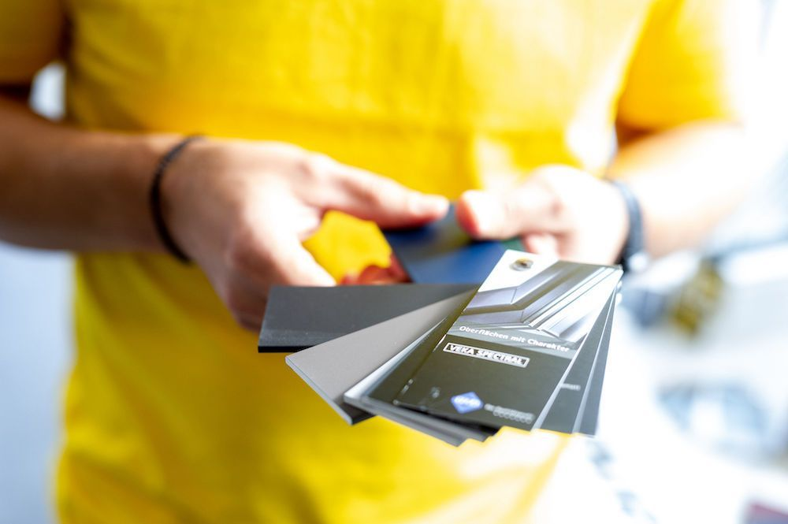
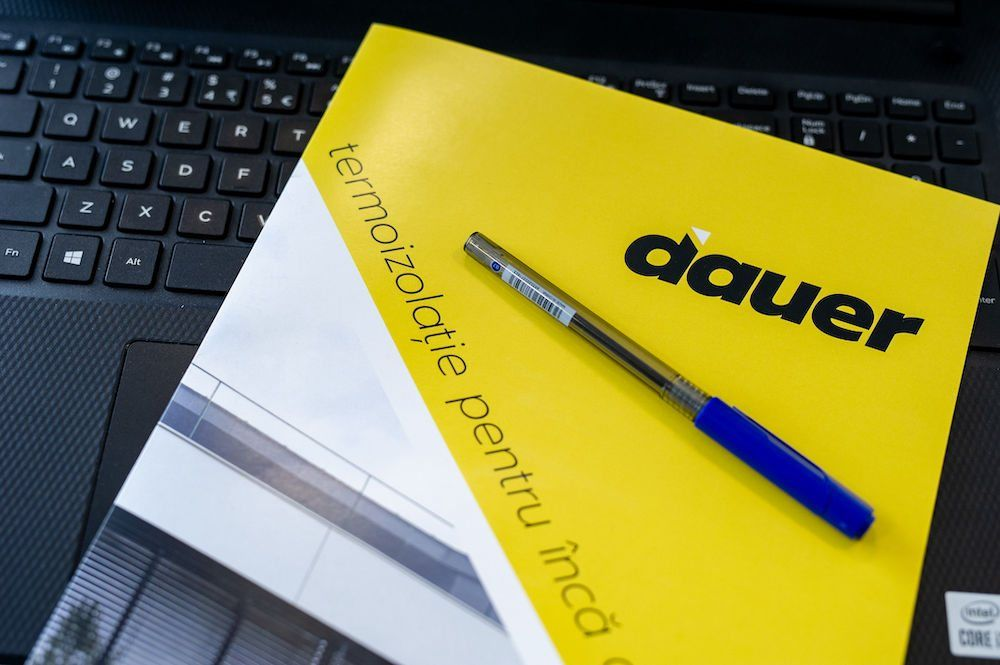
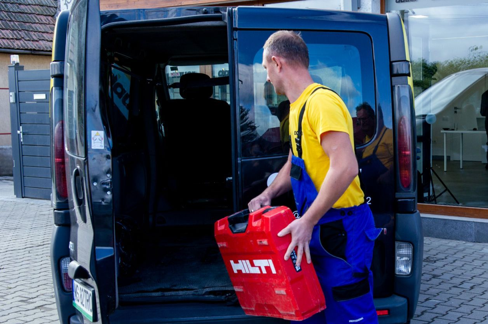
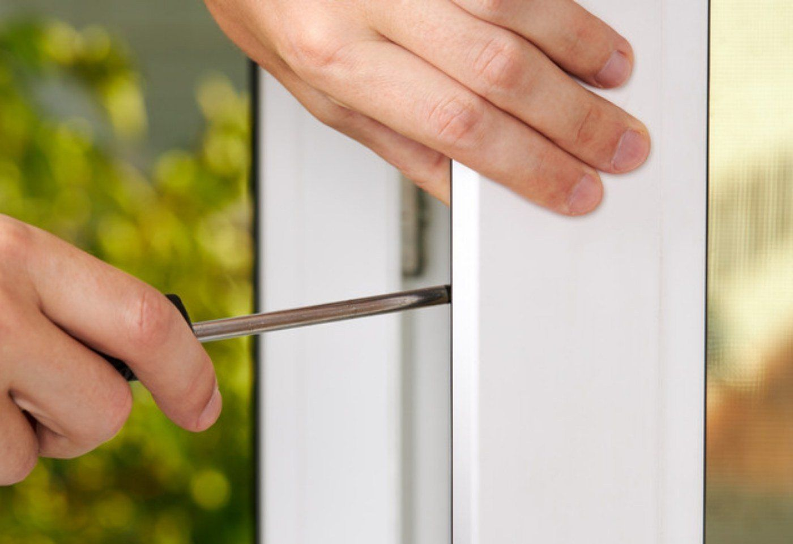

Termopane Târgu Mureș
Ferestre și uși termopan din PVC și aluminiu, montate de echipa Dauer din 2009. Măsurăm la fața locului, montăm cu oamenii noștri și revenim pentru mentenanță.
Profile și pachete de sticlă alese ca să țină căldura în casă.
Specialiștii noștri măsoară fiecare gol, pentru o montare fără surprize.
Transportul și montajul le facem noi, nu subcontractori.
Garanție la toate produsele și revenim pentru întreținere.
Termopane alese pentru casa ta, montate de aceeași echipă
Termopanele sunt ferestrele și ușile cu geam termoizolant, pe profile din PVC sau aluminiu. Te ajutăm să alegi profilul, pachetul de sticlă și feroneria, în funcție de casă, buget și cât de bine vrei să izoleze.
Cum montăm termopanele, pas cu pas




Cât costă termopanele în Târgu Mureș
Prețul se stabilește după măsurători, pentru fiecare gol în parte. Primești o ofertă clară, pentru varianta aleasă.

Termopane în Târgu Mureș și împrejurimi
Sediul Dauer e pe Str. Dezrobirii nr. 35, în Târgu Mureș. De aici pleacă echipele noastre la măsurători și montaj, în tot orașul și în localitățile din jur.
Ce ne întreabă clienții despre termopane
Cât costă termopanele în Târgu Mureș?
Prețul depinde de dimensiuni, de profil (PVC sau aluminiu), de pachetul de sticlă și de culoare. După măsurătorile la fața locului primești o ofertă clară, pentru varianta aleasă. Ne poți suna la 0740 300 122 sau poți completa formularul de ofertă.
Ce termopane să aleg, din PVC sau din aluminiu?
Termopanele din PVC sunt alegerea potrivită pentru cele mai multe case și apartamente: izolează bine, se întrețin ușor și au un preț accesibil. Tâmplăria din aluminiu se potrivește deschiderilor mari și caselor moderne, pentru că profilele subțiri susțin suprafețe mari de sticlă.
Cine face măsurătorile și montajul?
Măsurătorile le fac specialiștii Dauer, la fața locului. Transportul și montajul le fac echipele noastre proprii, aceleași care revin apoi pentru reglaje și mentenanță.
Ce garanție au termopanele?
Oferim garanție la toate produsele de tâmplărie și rămânem alături de tine și după expirarea ei, cu servicii de post-garanție, reglaje și mentenanță.
Cu ce mărci de profile lucrați?
Pentru termopanele din PVC lucrăm cu Salamander, Rehau și Veka. Pentru tâmplăria din aluminiu lucrăm cu Schüco, Reynaers, Alumil și Aluprof.
De când montați termopane în Târgu Mureș?
Sisteme Dauer a fost înființată în 2009, în Târgu Mureș, cu capital integral românesc. De atunci proiectăm, livrăm și montăm tâmplărie PVC și aluminiu pentru case, blocuri și spații comerciale.
Cu noi poți crea ceva unic
Îți venim în ajutor cu soluții complete, atât pe partea de produse, cât și de servicii, pentru un proiect reușit.
Spune-ne ce proiect ai
Îți răspundem în cel mai scurt timp și stabilim o vizită pentru măsurători.
 Un specialist Dauer vine la tine pentru măsurători.
Un specialist Dauer vine la tine pentru măsurători.